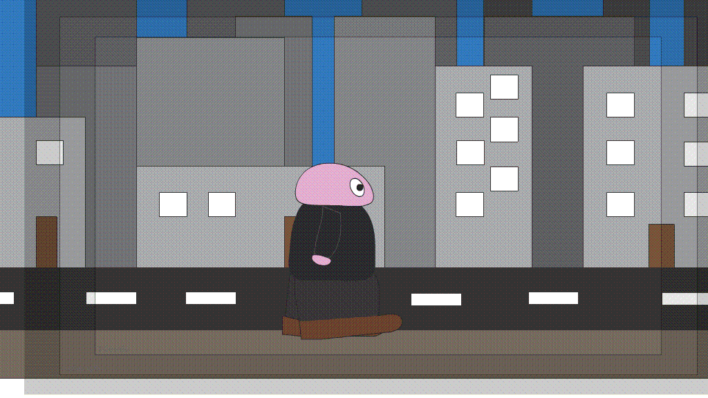

Welcome to my small page on the internet.
My name is Noel and this is just a temporary portfolio page untill I find a actual site for myself.
Here I'll be showcaseing some of my work like videos made and images and animations made and anything else I made.

My most recent video done with people from college.
This is about the Fairy Trail in Templemore Park with a little animation to add some character and make the video more interesting.
the first video I made for a college assignment was done with the help of 2 other people and we had to make a short from a script someone else made.
not the the best but was the first.
I also made a kinetic Typography video for the song Meddle by. I enjoyed this alot and I am planning on making another one but based more on conversations between people than music.
Back in my first year of college I used Flash to make some 2D animations.
Here was one of the first, a bouncing ball to show me tweening.
Moving up in the animation difficulty (though not so difficult now) I made a obstacle course.

I finished 2D animation with a parallax scrolling walk cycle.
In my second year of college we learned a bit of 3D animation.
it started with doing a character walk cycle.
3D walk animation
I also made a Sneak cycle and documented the process more.
(which I should of done more)
3D sneak animation